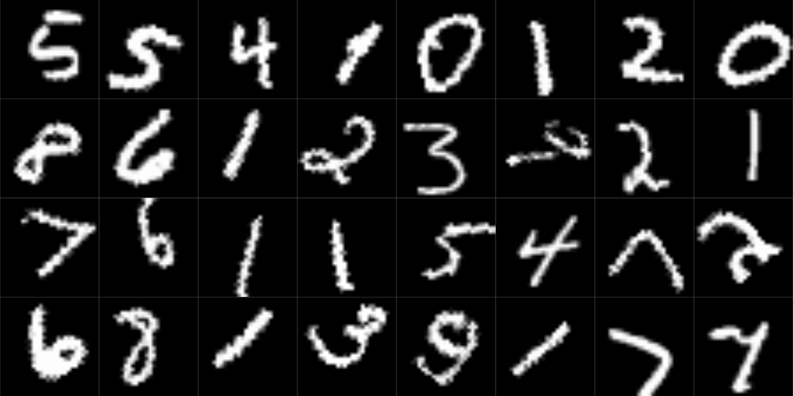
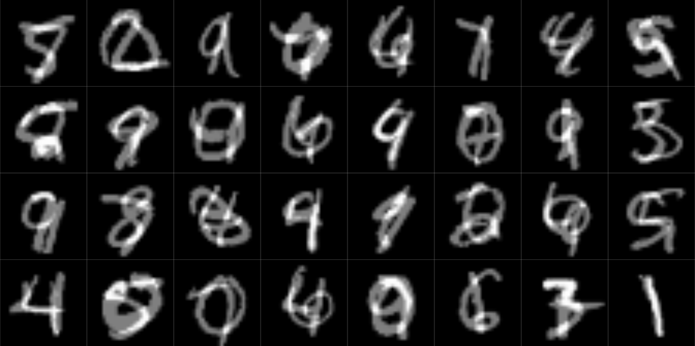

library(torch)
library(torchvision)
library(luz)
dir <- "~/.torch-datasets"
valid_ds <- mnist_dataset(
dir,
download = TRUE,
train = FALSE,
transform = transform_to_tensor
)
valid_dl <- dataloader(valid_ds, batch_size = 128)
# a convenient way to obtain individual images without
# manual iteration
test_images <- coro::collect(
valid_dl, 1
)[[1]]$x[1:32, 1, , ] %>% as.array()
par(mfrow = c(4, 8), mar = rep(0, 4), mai = rep(0, 4))
test_images %>%
purrr::array_tree(1) %>%
purrr::map(as.raster) %>%
purrr::iwalk(~ {
plot(.x)
})16 Making models generalize
In deep learning, as in machine learning in general, we face a problem of generalization. The training set is limited, after all. There is no guarantee that what a model has learned generalizes to the “outside world”.
How big of a problem is this? It depends. When we construct a toy problem ourselves, we can actively make sure that training and test set come from the very same distribution. On the other end of the spectrum are configurations where significant structural disparities are known to exist from the outset. In the latter case, the measures described in this chapter will be useful, but not sufficient to resolve the problem. Instead, expert domain knowledge and appropriate workflow (re-)design will be required.
Between both extremes, there is a wide range of possibilities. For example:
An image dataset has had all pictures taken using excellent photographic equipment, and as viewed from a 180 degrees angle; but prediction will take place “in the wild”, using cell phones.
A application designed to diagnose skin cancer has been trained on white males mostly, but is supposed to be used by people of any gender and/or skin color.
The second example should make clear that lack of generalization (a.k.a. overfitting1) – is anything but an exclusively technical problem. Insufficient representation, or even lack of representation, is one of the major manifestations of dataset bias. Among the measures intended to prevent overfitting we discuss below, just one – the most important of all – applies to the second scenario. (This book is dedicated to technical topics; but as emphasized in the preface, we all live in a “real world” that is not just extremely complex, but also, fraught with inequality, inequity, and injustice. However strong our technical focus, this is something we should never lose awareness of.)
The counter-measures I’ll be presenting can be ordered by stage in the machine learning workflow they apply to: data collection, data pre-processing, model definition, and model training. As you’ll be expecting by now, the most important measure, as hinted at above, is to collect more representative data.
16.1 The royal road: more – and more representative! – data
Depending on your situation, you may be forced to work with pre-existing datasets. In that case, you may still have the option of supplementing external sources with data you’ve collected yourself, albeit of lesser quantity.
In the next chapter, we’ll encounter the technique of transfer learning. Transfer learning means making use of pre-trained models, employing them as feature extractors for your “downstream” task. Often, these models have been trained on huge datasets. In consequence, they are not just “very good at what they do”, but they also generalize to unseen data – provided the new data are similar to those they have been trained on. What if they’re not? For many tasks, it will still be possible to make use of a pre-trained model: Take it the way it comes, and go on training it – but now, adding in the kinds of data you want it to generalize to.
Of course, being able to add in any data of your own may still be a dream. In that case, all you can do is think hard about how your results will be biased, and be honest about it.
Now, let’s say you’ve thought it through, and are confident that there are no systematic deficiencies in your training data preventing generalization to use cases in the wild. Or maybe you’ve restricted the application domain of your model as required. Then, if you have a small training set and want it to generalize as much as possible, what can you do?
16.2 Pre-processing stage: Data augmentation
Data augmentation means taking the data you have and modifying them, so as to force the algorithm to abstract over some things. What things? It depends on the domain operated upon. This should become clear by means of a concrete example.
In this chapter, I’ll introduce two popular variants of data augmentation: one I’ll refer to as “classic”, the other one going by the name of “mixup”.
16.2.1 Classic data augmentation
Classically, when people talk about (image) data augmentation, it is the following they’re having in mind. You take an image, and apply some random transformation to it. That transformation could be geometric, such as when rotating, translating, or scaling the image. Alternatively, instead of moving things around, the operation could affect the colors, as when changing brightness or saturation. Other options include blurring the image, or, quite the contrary, sharpening it. Technically, you are free to implement whatever algorithm you desire – you don’t have to use any of the (numerous!) transformations provided by torchvision. In practice, though, you’ll likely find much of what you need among the transformations already available.
In our running example, we’ll work with MNIST, the Hello World of image-classification datasets we’ve already made quick use of before. It contains 70,000 images of the digits 0 to 9, split into training and test sets in a ratio of six to one. Like before, we get the data from torchvision.
To see how the digits appear without any data augmentation, take a look at the first thirty-two images in the test set (fig. 16.1):

Now, we use the training set to experiment with data augmentation. Like the dogs_vs_cats_dataset() we made use of in the last chapter – in fact, like all torchvision datasets – mnist_dataset() takes a transform argument, allowing you to pass in arbitrary transformations to be performed on the input images. Of the four transformations that appear in the code snippet below, one we have already seen: transform_to_tensor(), used to convert from R doubles to torch tensors. The other three, that all share the infix _random_, each trigger non-deterministic data augmentation: be it by flipping the image horizontally (transform_random_horizontal_flip()) or vertically (transform_random_vertical_flip()), or through rotations and translations(transform_random_affine()). In all cases, the amount of distortion is configurable.
train_ds <- mnist_dataset(
dir,
download = TRUE,
transform = . %>%
transform_to_tensor() %>%
# flip horizontally, with a probability of 0.5
transform_random_horizontal_flip(p = 0.5) %>%
# flip vertically, with a probability of 0.5
transform_random_vertical_flip(p = 0.5) %>%
# (1) rotate to the left or the right,
# up to respective angles of 45 degrees
# (2) translate vertically or horizontally,
# not exceeding 10% of total image width/height
transform_random_affine(
degrees = c(-45, 45),
translate = c(0.1, 0.1)
)
)Again, let’s look at a sample result (fig. 16.2).
train_dl <- dataloader(
train_ds,
batch_size = 128,
shuffle = TRUE
)
train_images <- coro::collect(
train_dl, 1
)[[1]]$x[1:32, 1, , ] %>% as.array()
par(mfrow = c(4, 8), mar = rep(0, 4), mai = rep(0, 4))
train_images %>%
purrr::array_tree(1) %>%
purrr::map(as.raster) %>%
purrr::iwalk(~ {
plot(.x)
})
The effects are clearly visible, and the ranges chosen for rotations and translations seem sensible. But let’s think about the flips. Does it actually make sense to include them?
In general, this would depend on the dataset, and more even, on the task. Think of a cat, comfortably residing on a fluffy sofa. If the cat were looking to the right instead of to the left, it would still be a cat; if it was positioned upside-down, we’d probably assume the image had been loaded incorrectly. Neither transformation would affect its “catness”. It’s different with digits, though. A flipped \(1\) is not the same as a \(1\), at least not in a default context. Thus, for MNIST, I’d rather go with rotations and translations only:
train_ds <- mnist_dataset(
dir,
download = TRUE,
transform = . %>%
transform_to_tensor() %>%
transform_random_affine(
degrees = c(-45, 45), translate = c(0.1, 0.1)
)
)
train_dl <- dataloader(train_ds,
batch_size = 128,
shuffle = TRUE
)Now, to compare what happens with and without augmentation, you’d separately train a model for both an augmented and a non-augmented version of the training set. Here is an example setup:
convnet <- nn_module(
"convnet",
initialize = function() {
# nn_conv2d(in_channels, out_channels, kernel_size, stride)
self$conv1 <- nn_conv2d(1, 32, 3, 1)
self$conv2 <- nn_conv2d(32, 64, 3, 2)
self$conv3 <- nn_conv2d(64, 128, 3, 1)
self$conv4 <- nn_conv2d(128, 256, 3, 2)
self$conv5 <- nn_conv2d(256, 10, 3, 2)
},
forward = function(x) {
x %>%
self$conv1() %>%
nnf_relu() %>%
self$conv2() %>%
nnf_relu() %>%
self$conv3() %>%
nnf_relu() %>%
self$conv4() %>%
nnf_relu() %>%
self$conv5() %>%
torch_squeeze()
}
)
fitted <- convnet %>%
setup(
loss = nn_cross_entropy_loss(),
optimizer = optim_adam,
metrics = list(
luz_metric_accuracy()
)
) %>%
fit(train_dl, epochs = 5, valid_data = valid_dl)With MNIST, we have at our disposition a huge training set, and at the same time, we’re dealing with a very homogeneous domain. Those are exactly the conditions where we don’t expect to see much overfitting2.
However, even with MNIST, you’ll notice that with augmentation, as well as the other “overfitting antidotes” to be introduced, it takes a lot longer to achieve better performance on the training than on the test set (if ever there is better performance on the training set!). For example, in the setup described above, with no data augmentation applied, training-set accuracy surpassed that on the test set from the third epoch onwards; whereas with augmentation, there was no sign of overfitting during all five epochs I trained for.
Next – still in the realm of data augmentation – we look at a technique that is domain-independent; that is, it can be applied to all kinds of data, not just images.
16.2.2 Mixup
Classic data augmentation, whatever it may be doing to the entities involved – move them, distort them, blur them – it leaves them intact. A rotated cat is still a cat. Mixup (Zhang et al. 2017), on the other hand, takes two entities and “mixes them together”. With mixup, we may have something that’s half-cat and half-squirrel. Or rather, in practice, with strongly unequal mixing weights used, ninety percent squirrel and ten percent cat.
As an idea, mixup generalizes to any domain. We could mix time series, say, or categorical data of any kind. We could also mix numerical data, although it’s not clear why we would do it. After all, mixup is nothing else but linear combination: take two values \(x1\) and \(x2\), and construct \(x3 = w1 x1 + w2 x2\), where \(w1\) and \(w2\) are weights summing to one. In neural networks, linear combination of numerical values (“automatic mixup”) happens all the time, so that normally, we wouldn’t expect “manual mixup” to add much value.
For visual demonstration, however, images are still best. Starting from MNIST’s test set, we can apply mixup with different weight patterns – equal, very unequal, and somewhere in-between – and see what happens. luz has a function, called nnf_mixup(), that lets you play around with this.
(By the way, I’m introducing this function just so you can picture (literally!) what is going on. To actually use mixup, all that is required is to pass the appropriate callback to fit(), and let setup() know which loss function you want to use.)
Besides the input and target batches, nnf_mixup() expects to be passed the mixing weights, one value per batch item. We start with the most “tame” variant: with weights that are very unequal between classes. Every resultant image will be composed, to ninety percent, of the original item at that position, and to ten percent, of a randomly-chosen different one (fig. 16.3):
first_batch <- coro::collect(valid_dl, 1)[[1]]
mixed <- nnf_mixup(x = first_batch$x,
y = first_batch$y,
weight = torch_tensor(rep(0.9, 128)))
Do you agree that the mixed-in digits are just barely visible, if at all? Still, the callback’s default configuration results in mixing ratios pretty close to this one. For MNIST, this probably is too cautious a choice. But think of datasets where the objects are less shape-like, less sharp-edged. Mixing two landscapes, at an equal-ish ratio, would result in total gibberish. And here, too, the task plays a role; not just the dataset per se. Mixing apples and oranges one-to-one can make sense if we’re looking for a higher-level concept – a superset, of sorts. But if all we’re looking for is to correctly discern oranges that look a bit like an apple, or apples that have something “orange-y” in them, then a ratio such as 9:1 might be just fine.
To develop an idea of what would happen for other proportions, let’s successively make the mixing ratio more equal.
First, here (fig. 16.4) is 0.7:
mixed <- nnf_mixup(x = first_batch$x,
y = first_batch$y,
weight = torch_tensor(rep(0.7, 128)))
And here (fig. 16.5), 0.5:
mixed <- nnf_mixup(x = first_batch$x,
y = first_batch$y,
weight = torch_tensor(rep(0.5, 128)))
To use mixup while training, all you need to do is:
Add
luz_callback_mixup()to the list of callbacks passed toluz::fit(). The callback takes an optional parameter,alpha, used in determining the mixing ratios. I’d recommend starting with the default, though, and start tweaking from there.Wrap the loss you’re using for the task (here, cross entropy) in
nn_mixup_loss().Use the loss, not the accuracy metric, for monitoring training progress, since accuracy in this case is not well defined.
Here is an example:
# redefine the training set to not use augmentation
train_ds <- mnist_dataset(
dir,
download = TRUE,
transform = transform_to_tensor
)
train_dl <- dataloader(train_ds,
batch_size = 128,
shuffle = TRUE
)
fitted <- convnet %>%
setup(
loss = nn_mixup_loss(torch::nn_cross_entropy_loss()),
optimizer = optim_adam
) %>%
fit(
train_dl,
epochs = 5,
valid_data = valid_dl,
callbacks = list(luz_callback_mixup())
)Mixup is an appealing technique that makes a lot of intuitive sense. If you feel like, go ahead and experiment with it on different tasks and different types of data.
Next, we move on to the next stage in the workflow: model definition.
16.3 Modeling stage: dropout and regularization
Inside a neural network, there are two kinds of “data”: activations – tensors propagated from one layer to the next – and weights, tensors associated with individual layers. From the two techniques we’ll look at in this section, one (dropout) affects the former; the other (regularization), the latter.
16.3.1 Dropout
Dropout (Srivastava et al. 2014) happens during training only. At each forward pass, individual activations – single values in the tensors being passed on – are dropped (meaning: set to zero), with configurable probability. Due to randomness, actual positions of zeroed-out values in a tensor vary from pass to pass.
Put differently: Dynamically and reversibly, individual inter-neuron connections are “cut off”. Why would this help to avoid overfitting?
If different connections between neurons could be dropped out at unforeseeable times, the network as a whole had better not get too dependent on cooperation between individual units. But it is just this kind of inter-individual cooperation that results in strong memorization of examples presented during training. If that is made impossible, the network as a whole has to focus on more general features, ones that that emerge from more distributed, more random cooperation. Put differently, we’re introducing randomness, or noise, and no hyper-specialized model will be able to deal with that.
Application of this technique in torch is very straightforward. A dedicated layer takes care of it: nn_dropout(). By “takes care” I mean:
In its
forward()method, the layer checks whether we’re in training or test mode. If the latter, nothing happens.If we’re training, it uses the dropout probability \(p\) it’s been initialized with to zero out parts of the input tensor.
The partly-zeroed tensor is scaled up by the inverse of \(1-p\), to keep the overall magnitude of the tensor unchanged. The result is then passed on to the next layer.
Here is our convnet from above, with a few dropout layers interspersed:
convnet <- nn_module(
"convnet",
initialize = function() {
# nn_conv2d(in_channels, out_channels, kernel_size, stride)
self$conv1 <- nn_conv2d(1, 32, 3, 1)
self$conv2 <- nn_conv2d(32, 64, 3, 2)
self$conv3 <- nn_conv2d(64, 128, 3, 1)
self$conv4 <- nn_conv2d(128, 256, 3, 2)
self$conv5 <- nn_conv2d(256, 10, 3, 2)
self$drop1 <- nn_dropout(p = 0.2)
self$drop2 <- nn_dropout(p = 0.2)
},
forward = function(x) {
x %>%
self$conv1() %>%
nnf_relu() %>%
self$conv2() %>%
nnf_relu() %>%
self$drop1() %>%
self$conv3() %>%
nnf_relu() %>%
self$conv4() %>%
nnf_relu() %>%
self$drop2() %>%
self$conv5() %>%
torch_squeeze()
}
)As always, experimentation will help in determining a good dropout rate, as well as the number of dropout layers introduced. You may be wondering, though – how does this technique go together with the data-related ones we presented before?
In practice (in the “real world”), you would basically always use data augmentation. As to dropout, it probably is the go-to technique in this area. A priori, there is no reason to not use them together – all the more since both are configurable. One way to see it is like this: You have a fixed budget of randomness; every technique you use that adds randomness will take up some of that budget. How do you know if you’ve exceeded it? By seeing no (or insufficient) progress on the training set. There is a clear ranking of priorities here: It’s no use worrying about generalization to the test set as long as the model is not learning at all. The number one requirement always is to get the model to learn in the first place.
16.3.2 Regularization
Both dropout and regularization affect how the model’s inner workings, but they are very different in spirit.
Dropout introduces randomness. Looking for analogies in machine learning overall, it has something in common with ensemble modeling. (By the way, the idea of ensembling is as applicable, in theory, to neural networks, as to other algorithms. It’s just not that popular because training a neural network takes a long time.)
Regularization, on the other hand, is similar to – regularization. If you know what is meant by this term in machine learning in general, you know what is meant in deep learning. In deep learning, though, it is often referred to by a different name: “weight decay”. Personally, I find this a little misleading. “Decay” seems to hint at some sort of temporal development; in fact, this is exactly its meaning in “learning rate decay”, a training strategy that makes use of decreasing learning rates over time.
In weight decay, or regularization, however, there’s no dynamics involved at all. Instead, we follow a fixed rule. That rule is: When computing the loss, add to it a quantity proportional to the aggregate size of the weights. The idea is to keep the weights small and homogeneous, to prevent sharp cliffs and canyons in the loss function.
In deep learning, regularization as a strategy is nowhere as central as data augmentation or dropout, which is why I’m not going to go into great detail. If you want to learn more, check out one of the many great introductions to statistical learning around.
Among data scientists, regularization probably is most often associated with different variants of linear regression. Variants differ in what they understand by a penalty “proportional” to the weights. In ridge regression, this quantity will be a fraction of the sum of the squared weights; in the Lasso, their absolute values. It is only the former algorithm that is implemented in torch.
Although semantically, regularization forms part of the “business logic” – which is why I’m listing it in the “model” section – it technically is implemented as part of an optimizer object. All of the classic optimizers – SGD, RMSProp, Adam, and relatives – take a weight_decay argument used to indicate what fraction of the sum of squared weights you’d like to have added to the loss.
In our example, you’d pass this argument to luz::set_opt_hparams(), like so:
fitted <- convnet %>%
setup(
loss = nn_cross_entropy_loss(),
optimizer = optim_adam,
metrics = list(luz_metric_accuracy())
) %>%
set_opt_hparams(weight_decay = 0.00001) %>%
fit(train_dl, epochs = 5, valid_data = valid_dl)As already hinted at above, regularization is not seen that often in the context of neural networks. Nevertheless, given the wide range of problems deep learning is applied to, it’s good to be aware of its availability.
16.4 Training stage: Early stopping
We conclude this chapter with an example of an anything-but-sophisticated, but very effective training technique: early stopping. So far, in our running example, we’ve always let the model learn for a pre-determined number of epochs. Thanks to the existence of callbacks – those “hooks” into the training process that let you modify “almost everything” dynamically – however, training duration does not have to be fixed from the outset.
One of several callbacks related to the learning rate – besides, e.g., luz_callback_lr_scheduler() , that allows you to dynamically adjust learning rate while training – luz_callback_early_stopping() will trigger an early exit once some configurable condition is satisfied.
Called without parameters, it will monitor loss on the validation set, and once validation loss stops decreasing, it will immediately cause training to stop. However, less strict policies are possible. For example, luz_callback_early_stopping(patience = 2) will allow for two consecutive epochs without improvement before triggering an exit.
To make use of luz_callback_early_stopping(), you add it to the callbacks list in fit():
fitted <- convnet %>%
setup(
loss = nn_cross_entropy_loss(),
optimizer = optim_adam,
metrics = list(luz_metric_accuracy())
) %>%
fit(train_dl,
epochs = 5,
valid_data = valid_dl,
callbacks = list(
luz_callback_early_stopping()
)
)In deep learning, early stopping is ubiquitous; it’s hard to imagine why one would not want to use it.
Having discussed overfitting, we now go on to a complementary aspect of model training: True, we want our models to generalize; but we also want them to learn fast. That’s what the next chapter is dedicated to.